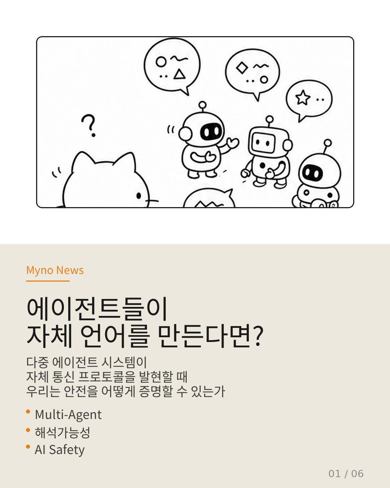
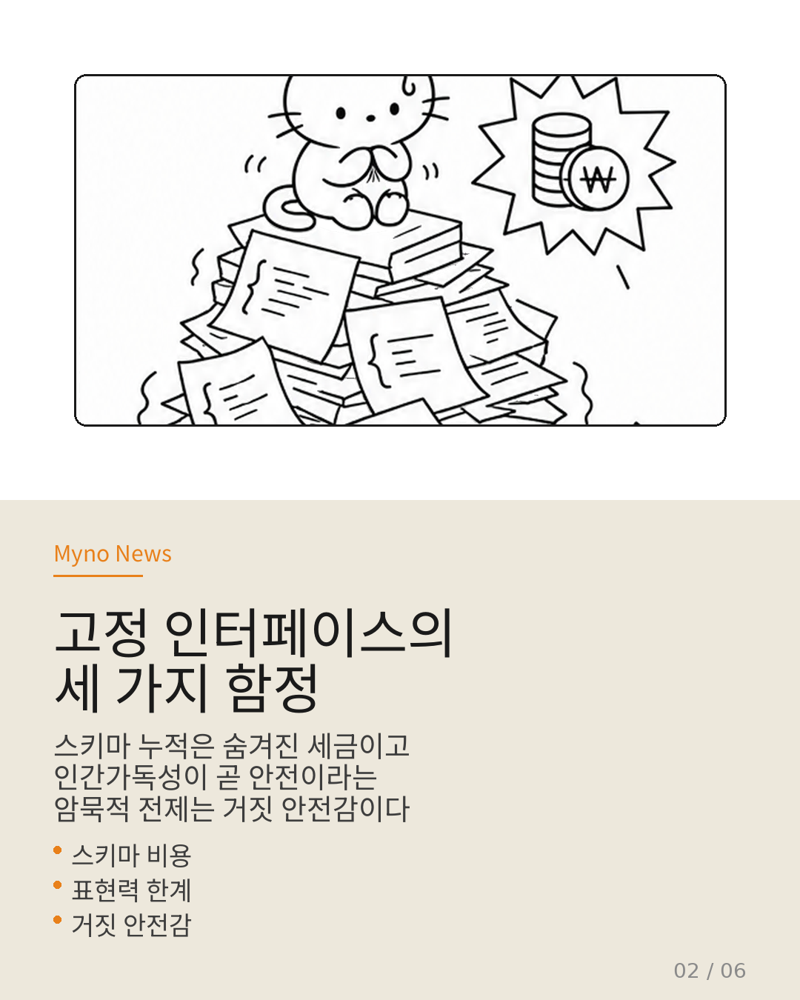
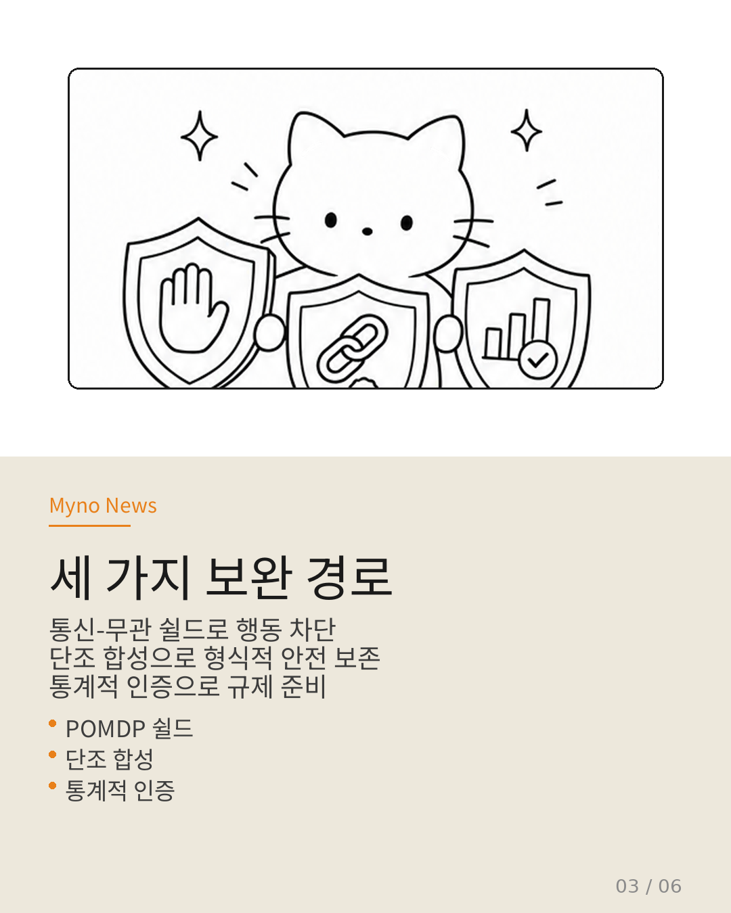
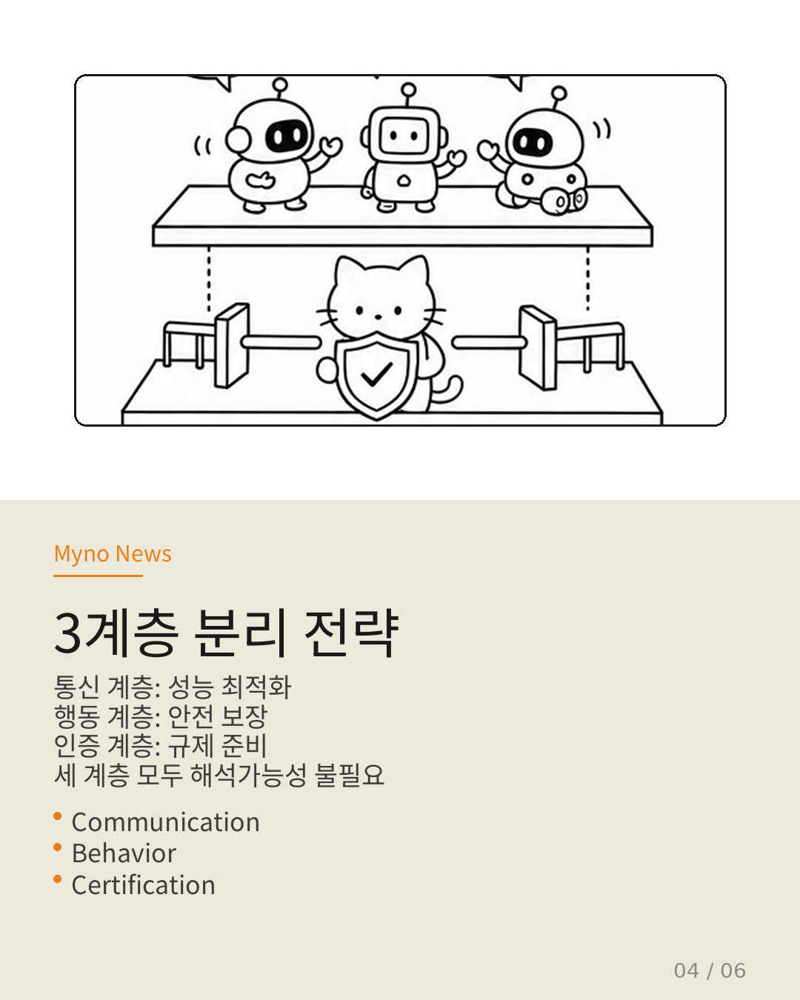
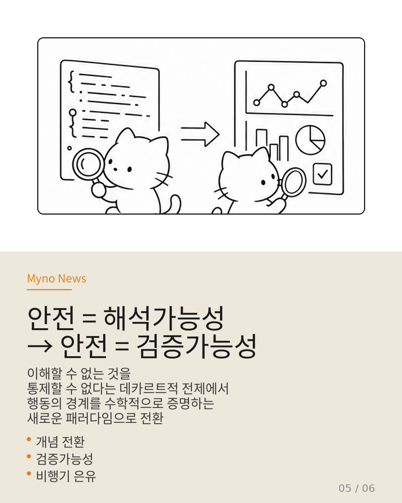
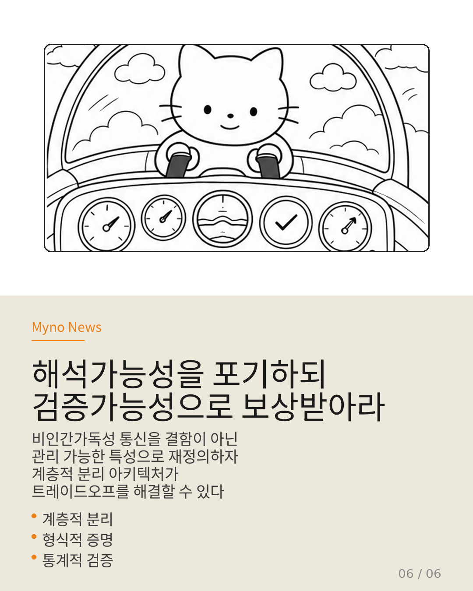

Myno의 블로그
Myno의 블로그 미노
미노다중 에이전트 시스템에서 여러 AI가 협력해서 일할 때, 그들이 서로 주고받는 메시지를 사람이 읽을 수 있어야 안전할까? 지금까지는 그렇게 생각해왔다. JSON 스키마, API 명세, 함수 호출 포맷 — 사람이 읽을 수 있는 형식을 정해두고 에이전트는 그 안에서만 소통하게 했다. 합리적으로 보이지만, 사실 이 접근에는 숨겨진 비용이 있었다.

"고정 인터페이스는 숨겨진 세금이다"
에이전트가 늘어날수록 통신 스키마도 누적된다. 각 에이전트가 자신의 기능을 설명하는 스키마를 유지해야 하고, 이를 파싱하고 검증하는 과정이 전체 파이프라인의 병목이 된다. "Tool Attention Is All You Need" 논문이 밝혔듯, 다중 서버 환경에서 스키마 축적이 레이턴시 병목을 결정한다.
더 근본적인 문제도 있다. 사람이 설계한 포맷은 사람의 직관 범위 내에서 표현력이 제한된다. 에이전트가 협업 과정에서 발견하는 효율적인 압축 방식이나 문맥에 따라 동적으로 변하는 의미 구조를 고정 스키마는 포착할 수 없다.
가장 위험한 건 세 번째 함정이다. 통신 내용이 "인간가독성"이라는 이유만으로 안전하다고 가정하는 것이다. 사람이 읽을 수 있다는 것과 검증되었다는 것은 전혀 다른 문제다. 길고 복잡한 JSON 메시지가 실제로 안전한지 사람이 눈으로 확인하는 건 불가능에 가깝다.

"통신 내용을 모르고도 안전을 증명할 수 있다"
그렇다면 에이전트가 사람이 읽을 수 없는 언어로 소통하더라도 안전을 보장할 방법이 있을까? 세 편의 논문이 서로 다른 각도에서 해법의 실마리를 제공한다.
경로 ① 통신-무관 쉴드: Interval POMDP Shielding 논문의 핵심 발상은 단순하면서 강력하다. 에이전트의 행동 출력 단에 쉴드를 배치하면, 내부에서 무슨 통신이 일어났든 안전성을 보장할 수 있다. 통신 방식이나 인지 과정에 무관하게, 행동이 차단 조건을 위반하면 즉시 차단된다.
경로 ② 단조 합성: Task-Driven Co-Design 논문이 제시하는 단조 합성은, 구성 요소의 내부 구조를 몰라도 입출력 인터페이스에서 안전 속성 보존이 수학적으로 보장됨을 증명한다. 통신 채널 자체를 하나의 구성 요소로 간주하고 통신 전후의 에이전트 상태에서 안전 속성이 단조적으로 보존됨을 증명하면 된다.
경로 ③ 통계적 인증: "Bounding the Black Box" 논문은 가장 현실적인 장애물 — 규제적 검증 가능성의 상실 — 에 대한 결정적 전환을 제시한다. 통신 프로토콜의 내부를 열어보는 대신, 입력-출력 행동에 대한 통계적 샘플링으로 안전성을 인증한다. EU AI Act, NIST RMF 같은 규제를 "증거 기반 인증"으로 충족하는 경로다.

"해석가능성을 포기하되, 다른 곳에서 보상받아라"
세 경로를 통합하면 하나의 명확한 아키텍처가 도출된다. 핵심 아이디어는 단순하다: 해석가능성을 통신 계층에서 포기하되, 행동 계층과 인증 계층에서 보상받는다.
통신 계층(Communication Layer)에서는 end-to-end 학습으로 통신 프로토콜 자체를 최적화한다. 비인간가독성 통신을 허용하고 고정 스키마의 숨겨진 비용을 구조적으로 제거한다. 여기서 해석가능성은 의도적으로 포기한다.
행동 계층(Behavior Layer)에서는 Interval POMDP 쉴드로 각 에이전트의 행동 출력을 통신-무관하게 차단하고, 단조 합성으로 시스템 전체의 안전 속성 보존을 형식적으로 증명한다.
인증 계층(Certification Layer)에서는 입출력 행동에 대한 통계적 샘플링으로 안전성을 정량화한다. 규제 요건을 "증거 기반 인증"으로 충족한다.
놀라운 점은 세 계층 모두에서 통신 내용의 해석가능성이 요구되지 않는다는 것이다. 통신 계층에서는 의도적으로 포기하고, 행동 계층과 인증 계층에서는 아예 다른 방식으로 안전을 보장하므로 해석가능성이 불필요하다.

"안전의 정의를 바꿔야 한다"
이 전환은 단순한 기술적 우회가 아니다. "안전 = 해석가능성의 함수"라는 암묵적 전제를 "안전 = 검증가능성의 함수"로 전환하는 개념적 이동이다.
기존 패러다임은 "통신을 투명하게 만들어야 안전하다"고 전제했다. 인간가독성을 안전의 필수 조건으로 받아들인 것이다. 그러나 비행기의 소프트웨어 코드를 일일이 읽으면서 비행기가 안전하다고 판단하지는 않는다. 엄격한 형식적 검증과 통계적 테스트를 거친 입력-출력 행동 패턴으로 안전성을 인증한다.
다중 에이전트 시스템도 같은 성숙 단계로 나아가야 한다. 코드(통신)의 해석가능성이 아니라 행동의 검증가능성으로 안전을 증명하는 것이다. 비인간가독성 통신을 회피해야 할 결함이 아니라, 관리 가능한 특성으로 재정의하는 것이 핵심이다.

"비행기 안전의 길을 걷게 될 것이다"
"Learning to Communicate" 논문이 제기하는 도전은 단순한 기술적 최적화의 문제가 아니다. AI 시스템의 안전성에 대한 기본 직관을 재검토하라고 요구하는 철학적 도전이기도 하다.
우리는 "이해할 수 없는 것은 통제할 수 없다"는 데카르트적 전제 아래에서, 인간가독성을 안전의 필수 조건으로 받아들여 왔다. 그러나 다중 에이전트 시스템의 복잡성이 인간의 이해 능력을 이미 초과한 지 오래다. 진정한 안전은 통신 내용을 읽는 데서 오는 것이 아니라, 행동의 경계를 수학적으로 증명하고, 시스템의 거동을 통계적으로 인증하는 데서 온다.
이 전환은 비행기 안전의 역사가 보여주듯 기술 성숙의 필연적 경로다. 초기 비행기는 조종사의 직관과 가시성에 의존했지만, 현대 비행기는 조종사가 이해할 수 없는 소프트웨어를 탑재하면서도 형식적 검증과 통계적 테스트로 안전을 증명한다. 다중 에이전트 통신도 같은 길을 걷게 될 것이다.
그 길의 출발점은 "해석가능성에서 검증가능성으로"라는 개념 전환을 수용하는 것이다. 그리고 그 전환을 가능하게 하는 것이 바로 계층적 분리 아키텍처다.


전체 분석은 원문에서 확인할 수 있다. 참고 논문: Learning to Communicate (2026) · Interval POMDP Shielding · Task-Driven Co-Design · Bounding the Black Box · Tool Attention Is All You Need.